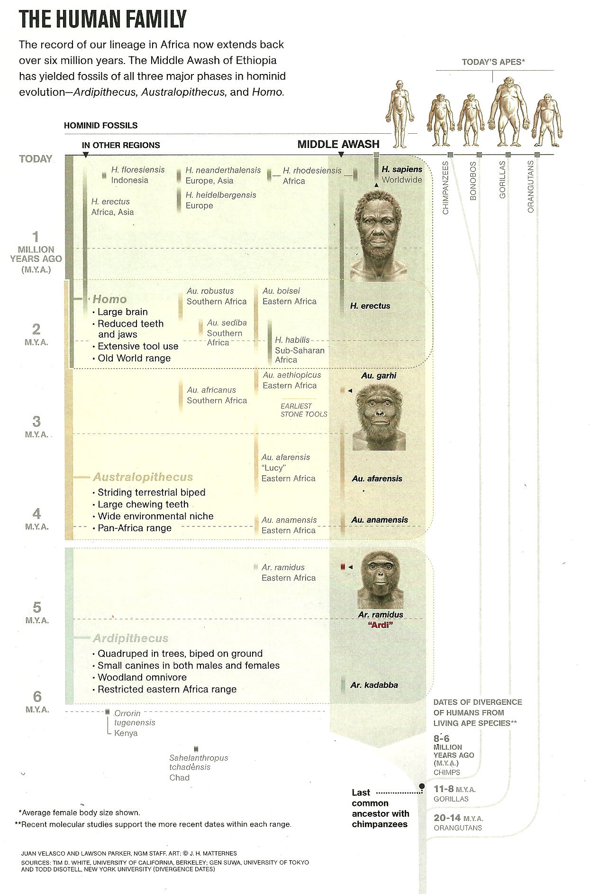
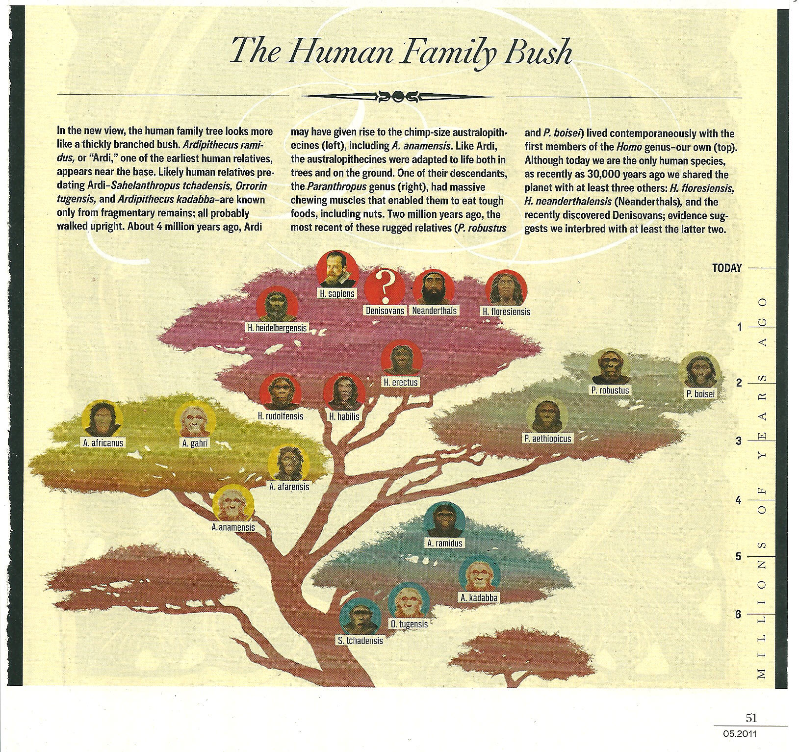

| Feature Article - July 2011 |
| by Do-While Jones |
It's really hard to argue with the consensus view of human evolution because there isn't any consensus.
We pity the poor biology teachers who have to teach human evolution. Whose version of evolution should they teach? How can you give a test on human evolution when every answer is right (or wrong) depending upon which expert you ask?
Several times in the past we have started to write an article about what evolutionists believe about human evolution, but have given up in frustration because there are just too many different stories to address them all. We wish there were a consensus view that we could discuss.
Our solution to the problem is just to consider what evolutionists have written about human evolution since April, 2010. It may not be consensus, but at least it represents the latest confusion in the peer-reviewed scientific literature.
The fundamental problem evolutionists have is that they are trying to develop a theory with no real data to back it up.
|
Our genus Homo is thought to have evolved a little more than 2 million years ago from the earlier Australopithecus. But there are few fossils that provide detailed information. 1 |
Fortunately for evolutionists, the "fewer fossils that provide detailed information" give them more room for unsubstantiated interpretation.
In reference to some recently discovered fossils dubbed Australopithecus sediba, the journal Science said,
|
But whether the new hominins are Homo ancestors or a side branch of late-surviving australopithecines, researchers agree that because of their completeness--including a skull and many postcranial bones--the fossils offer vital new clues to a murky area in human evolution. "This is a really remarkable find," says paleontologist Meave Leakey of the National Museums of Kenya in Nairobi, who thinks it's an australopithecine. "Very lovely specimens," says biological anthropologist William Kimbel of Arizona State University (ASU), Tempe, who thinks they are Homo. Such different views of how to classify these fossils reflect a still-emerging debate over whether they are part of our own lineage or belong to a southern African side branch. The oldest Homo specimens are scrappy and enigmatic, leaving researchers unsure about the evolutionary steps between the australopithecines and Homo. Some think that the earliest fossils assigned to that genus, called H. habilis and H. rudolfensis and dated to as early as 2.3 million years ago, are really australopithecines. "The transition to Homo continues to be almost totally confusing," says paleoanthropologist Donald Johanson of ASU Tempe, who has seen the new fossils. So it is perhaps no surprise that the experts disagree over whether the new bones represent australopithecines or early Homo. And for now, at least, they don't seem to mind the uncertainty. "All new discoveries make things more confusing" at first, says anthropologist Susan Antón of New York University. 2 |
We could review their arguments, but what would be the point? They are trying to find evidence for how humans evolved from apes; but humans didn't evolve from apes. That's why they can't make the evidence fit their theory.
National Geographic has been funding research that led to the discovery of a fossil commonly called, "Ardi." We told you about Ardi in our November and December, 2009, newsletters. National Geographic rehashed its find in the July, 2010, cover story, which ran 34 pages. There was very little of substance in that article. It was mostly an adventure story about how exciting it is to find fossils, accompanied by many excellent photographs. The story included this interesting exchange between the author of the article and Tim White, the UC Berkley paleoanthropologist paid by National Geographic to find and study hominid fossils.
|
I asked White whether Ardi's transitional form might justify calling Ar. ramidus a "missing link." He bristled at the very question. "That term is wrong in so many ways, it's hard to know where to begin," he said. "Worst of all is the implication that at some point there existed something halfway between a chimp and a human. That's a popular misconception that has plagued evolutionary thought from the beginning, and one Ardi should bury, once and for all." If the Middle Awash team is right in its interpretation, Ar. ramidus is indeed nothing at all like a modern chimp or gorilla. Of course apes and humans derive from a common ancestor. But their lineages have been evolving in separate, and quite different, directions ever since. 3 |
So, the connecting link between apes and humans won't be much like an ape or much like a human. Well, isn't that convenient! Anything remotely like an ape or a human could be the common ancestor.
Ironically, right in the middle of that article, on page 45, they ran this chart.
|
 |
|---|
The chart above makes it look like humans evolved along a straight line that goes through Ardipithecus ramidus and Australopithecus afarensis up to H. sapiens (modern man). But then Discover magazine published the chart below showing them on completely separate branches that share a common ancestor, but did not evolve into each other.
|
 4 |
|---|
There's a big question mark above the Denisovans. We will talk about that, later. First, let's finish up this discussion about the disagreement of who-evolved-into-who.
|
The study of human origins has been marked by lively--sometimes vicious--sparring over the identity of the original human ancestor. The battle royal is best symbolized by world-famous Lucy, a 3.2 million-year-old fossil Australopithecus afarensis originally unearthed in 1974 and put forth as the original biped leading to us. The furor over Lucy's pedigree embroiled researchers of the 1980s and remains unresolved, but proof could be beside the point. "I frankly do not care," says Stony Brook paleoanthropologist William Jungers. "She allows us to understand what our precursors looked like: sexually dimorphic, small-brained bipeds retaining the ability to climb trees." Recent discoveries offer a deeper and broader view of human ancestry. One stunner: Early humans mated with Neanderthals, according to evolutionary geneticist Svante Pääbo and colleagues at the Max Planck Institute for Evolutionary Anthropology in Germany. Through an analysis of DNA fragments from Neanderthal bones, Pääbo traced the interbreeding back 60,000 years to the Middle East. Today 1 to 4 percent of the human genome outside Africa is Neanderthal. Another shock came last year when Tim White of the University of California, Berkeley, and the Middle Awash Team unveiled Ardipithecus ramidus ("Ardi"), a 4.4 million- year-old fossil female hominid. Bipedal on the ground but efficient at moving through trees, Ardi suggests the common ancestor we share with chimpanzees was an ape with monkeylike traits. Finally, in 2004, in a cave on the island of Flores in Indonesia, bones of a human relative no larger than a modern-day 4-year-old were discovered by archaeologist Michael Morwood of the University of Wollongong in Australia and his team. The bones are 14,000 years old, but tools nearby date back as much as a million years. After furious debate, most paleoanthropologists now agree that Homo floresiensis, nicknamed the hobbit, is a genuine ancient human with a teensy brain folded in ways that increased its complexity--enough for hobbits to hunt cooperatively, knap their own tools, and thrive on an island for more than a million years. 5 |
The most important, most honest statement in these two paragraphs is Jungers' observation that proof doesn't matter as long as the Stony Brook research project gets funded next year, and they can continue to spin yarns about human precursors. They don't need proof "to understand what our precursors looked like". And they call that "science."
You might not have heard about the Denisovans. The Discover chart shows a big question mark rather than an artist's conception of what Denisovans looked like. That's because Denisovans are known from a few bone fragments and a bunch of stone tools. Even the most imaginative artist needs more than that to draw a picture.
|
For the first time a hominin has been described, not from the morphology of its fossilized bones, but from the sequence of its DNA. The DNA comes from a piece of finger bone discovered in Denisova Cave in the Altai Mountains of southern Siberia. This cave was intermittently occupied by humans for 125,000 years. It is rich in stone tools and bone implements, but has yielded few human bones, most of them isolated finds such as that used in this study. With such incomplete specimens, the morphological information needed to identify the species to which a human bone belongs is impossible. ... By comparing the sequence of the Denisova mtDNA with those of Neanderthals and modern humans, Krause et al were able to draw a family tree showing the three species' evolutionary relationships. The tree revealed that the common ancestor of the species dates to about 1 million years ago. If modern humans evolved in Africa, then this ancestor must also have been in Africa, making it impossible for the Denisova hominin to be descended from the H. erectus populations that moved to Europe 900,000 years earlier. The Denisova sequence is also distinct from that of the immediate ancestors of Neanderthals, which split away from the lineage leading to modern humans some 450,000 years ago, much later than the branch leading to Denisova. Left with few alternatives, Krause et al. make the logical deduction that the Denisova DNA sequence represents an unknown type of hominin that left Africa in a previously unsuspected migration about 1 million years ago, and that survived in at least some parts of Eurasia until 40,000 years ago or later. 6 |
It's hard to believe that this was printed in a prestigious, peer-reviewed journal, and not a supermarket tabloid.
Follow-up research was printed in December. It was mostly about the methods and math used to come to their imaginative conclusion. But this comment is of particular interest.
|
Her approximately 3-billion-letter nuclear genome, reported in this issue of Nature, now provides a more telling glimpse into this mysterious group. It also raises previously unimagined questions about its history and relationship to Neanderthals and humans. "The whole story is incredible. It's like a surprising Christmas present," says Carles Lalueza Fox, a palaeogeneticist at Pompeu Fabra University in Barcelona, Spain, who was not involved in the research. 7 |
Yes, it's incredible, it's imaginary, and it's just what evolutionists wanted, brought to them by Santa Claus.
The DNA analysis of this partial finger bone has completely changed the evolutionists' tune.
|
Until recently, genetic data and interpretation of the fossil record seemed to favour a complete-replacement model, in which all human species trace all of their genetic ancestry to a single origin in one or more African populations of moderate size some 200,000 years ago. However, the Denisovan nuclear genome sequence, along with that of Homo neanderthalensis published by some of the same authors, suggest that the out-of-Africa population history of Homo sapiens is probably much more intertwined than previously thought, with more intertwining in some parts of the world than others. 8 |
Evolutionists have been divided as to whether humans evolved in Africa and migrated into Asia and Europe, or the more racially sensitive notion that humans evolved simultaneously all over the eastern hemisphere. They think they can resolve this issue by determining the route the first humans took out of Africa.
|
Most anthropologists think that our species, H. sapiens, first evolved in sub-Saharan Africa about 200,000 years ago and began migrating out of Africa between 70,000 and 50,000 years ago, eventually colonizing the globe. And although the expansion has often been considered a single migration, many researchers are beginning to suspect that moderns left Africa in two or more waves. Some of these early migrants may have gone east, across the Red Sea and along the southern coast of Arabia. But the earliest known modern human fossils outside Africa suggest a northern route, perhaps through the Nile Valley: Modern human skulls and other bones discovered in the early 20th century in the Skhul and Qafzeh caves in Israel are now dated to between 100,000 and 130,000 years ago, although researchers debate whether these early colonizers traveled any farther at that early date (Science, 9 October 2009, p. 224). Despite this early connection to the Middle East, not so long ago most experts thought that modern humans occupied North Africa itself relatively late. 9 |
As we said before, it is difficult for us to criticize the consensus view because it keeps changing. The technical literature is filled with paragraphs like these:
|
So ancient DNA, too, argued against the idea of mixing between Neandertals and moderns. Over the years the replacement model became the leading theory, with only a stubborn few, including Wolpoff, holding to multiregionalism. Yet there were a few dissenting notes. A few studies of individual genes found evidence of migration from Asia into Africa, rather than vice versa. Population geneticists warned that complete replacement was unlikely, given the distribution of alleles in living humans. And a few paleoanthropologists proposed middle-of-the-road models. Smith, a former student of Wolpoff's, suggested that most of our ancestors arose in Africa but interbred with local populations as they spread out around the globe, with archaic people contributing to about 10% of living people's genomes. At the University of Hamburg in Germany, Gunter Brauer similarly proposed replacement with hybridization, but with a trivial amount of interbreeding. But neither model got much traction; they were either ignored or lumped in with multiregionalism. "Assimilation got kicked so much," recalls Smith. 10 |
The one thing that evolutionists really do agree upon is that apes and humans had a common ancestor, and a study of differences in human and ape DNA can tell how both evolved. The presumption has always been that, since humans are more highly evolved than apes, human DNA should have things that ape DNA doesn't. Therefore, they look for the genes that make us human. That theory got a real kick in the head in March.
|
Humans differ from other animals in many aspects of anatomy, physiology, and behaviour; however, the genotypic basis of most human-specific traits remains unknown. Recent whole-genome comparisons have made it possible to identify genes with elevated rates of amino acid change or divergent expression in humans, and non-coding sequences with accelerated base pair changes. Regulatory alterations may be particularly likely to produce phenotypic effects while preserving viability, and are known to underlie interesting evolutionary differences in other species. Here we identify molecular events particularly likely to produce significant regulatory changes in humans: complete deletion of sequences otherwise highly conserved between chimpanzees and other mammals. We confirm 510 such deletions in humans, which fall almost exclusively in non-coding regions and are enriched near genes involved in steroid hormone signalling and neural function. 11 |
New Scientist wrote an editorial about the finding which said it all in the heading ("Children of the lost DNA") and subheading ("Extra genes did not make us human, it's what we lost that counts"). 12
All of the articles about the DNA comparison make the same fundamental error. They all assume that apes and humans evolved from a common ancestor. Therefore, they think, every difference in the DNA is due either to addition or loss of information. If apes and humans didn't have a common ancestor, then any conclusions based on this assumption are meaningless. This is especially true of the "molecular clock" idea which tries to determine how long it has been since species diverged based on mutation rates and the number of differences.
| Quick links to | |||
|---|---|---|---|
| Science Against Evolution Home Page |
Back issues of Disclosure (our newsletter) |
Web Site of the Month |
Topical Index |
Footnotes:
1
Science, 9 April 2010, "From Australopithecus to Homo", page 133
2
Science, 9 April 2010, "Candidate Human Ancestor From South Africa Sparks Praise and Debate", pages 154-155
3
National Geographic, July 2010, "The Evolutionary Road", pages 34 - 67, http://ngm.nationalgeographic.com/2010/07/middle-awash/shreeve-text.html
4
Discover, May 2010, "Meet the New Human Family", page 51
5
Discover, October 2010, "Human Family Tree Gets Bushy, Grows Roots", page 34, http://discovermagazine.com/2010/oct/12-most-important-science-trends-30-years/article_view?b_start:int=5
6
Nature, 8 April 2010, "Stranger from Siberia", page 838, http://www.nature.com/nature/journal/v464/n7290/full/464838a.html
7
Callaway, Nature, 23 December 2010, "Fossil genome reveals ancestral link", http://www.nature.com/news/2010/101222/full/4681012a.html
8
Bustamante & Henn, Nature, 23 December 2010, "Human origins: Shadows of early migrations", http://www.nature.com/nature/journal/v468/n7327/full/4681044a.html
9
Balter, Science, 7 January 2011, "Was North Africa the Launch Pad for Modern Human Migrations?", pages 20-23
10
Gibbons, Science, 28 January 2011, "A New View Of the Birth of Homo sapiens", pp. 392-394, http://www.sciencemag.org/content/331/6016/392.full?sid=957a2c0f-d61f-493e-b3d2-233b0a397684
11
McLean, et al., Nature, 10 March 2011, "Human-specific loss of regulatory DNA and the evolution of human-specific traits", pages 216-219, http://www.nature.com/nature/journal/v471/n7337/full/nature09774.html
12
New Scientist, 12 March 2011, "Children of the lost DNA", page 3